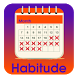

"The only way to get rid of a temptation is to yield to it." -- Oscar Wilde
"The only way to get rid of a temptation is to yield to it." -- Oscar Wilde Habitude is a habit tracking application you can use to help you build good habits and eliminate bad ones. Progress monitoring is a reliable method for developing positive habits. Viewing a record of past successes can boost your willpower when you feel weak, and help you gear up for future challenges.
Check out Habitude on Google Play
"The only way to get rid of a temptation is to yield to it." -- Oscar Wilde
Cheating on your diet is essential to success! With all the culinary temptations we encounter everyday, it is impossible to deny our cravings all of the time. The key is to eat healthy most of the time and allow yourself occasional guilt-free cheating.
Don't Eat That! is an application that can help you decide when to say "No" to those donuts or cupcakes, and when to go ahead and indulge. We call it "structured splurging." Behind one of those doors is the permission to cheat, and you get three chances to find it!
Check out Don't Eat That! on Google Play
 Trash Your Troubles will helps lessen the impact of negative thoughts
by letting you throw them away.
Trash Your Troubles will helps lessen the impact of negative thoughts
by letting you throw them away.
We throw garbage away all of the time. If we didn’t, it would build up in our kitchens, bathrooms, offices… and eventually take over our homes entirely. Negative thoughts are mental garbage. They affect our daily activities, our emotions, and our relationships. If we allow them to, negative thoughts can build up until they take over our minds.
It doesn’t have to be this way. A series of experiments in the journal Psychological Science, subjects wrote positive or negative thoughts on a piece of paper or into a text document on a computer. They then either kept their thoughts or threw them away (into the trash can or the computer’s recycle bin). In later assessments, subjects who had thrown their thoughts away were less affected by them than subjects who had held onto their thoughts. In other words, subjects who treated their thoughts as trash were no longer influenced by them.
Check out Trash Your Troubles on Google Play
{% include JB/analytics %}